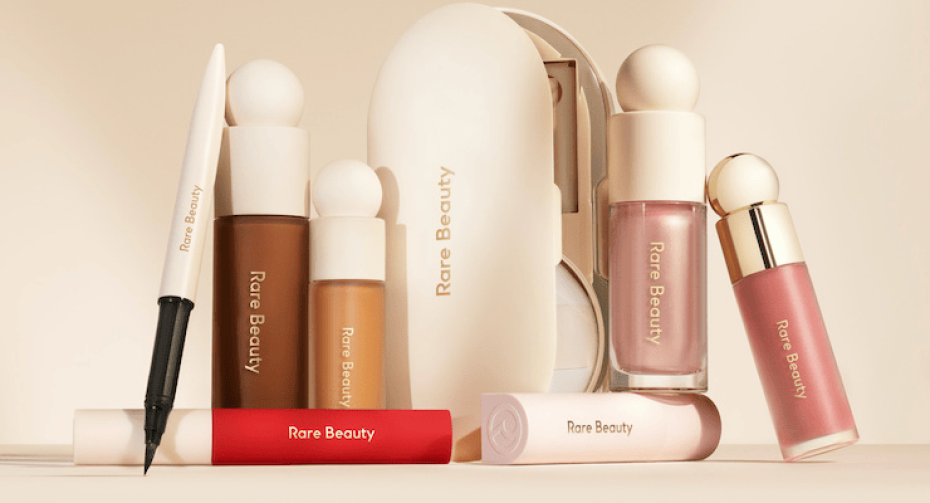
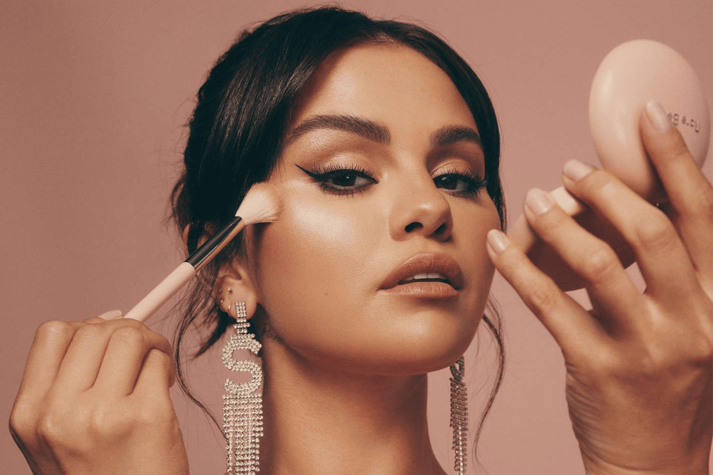
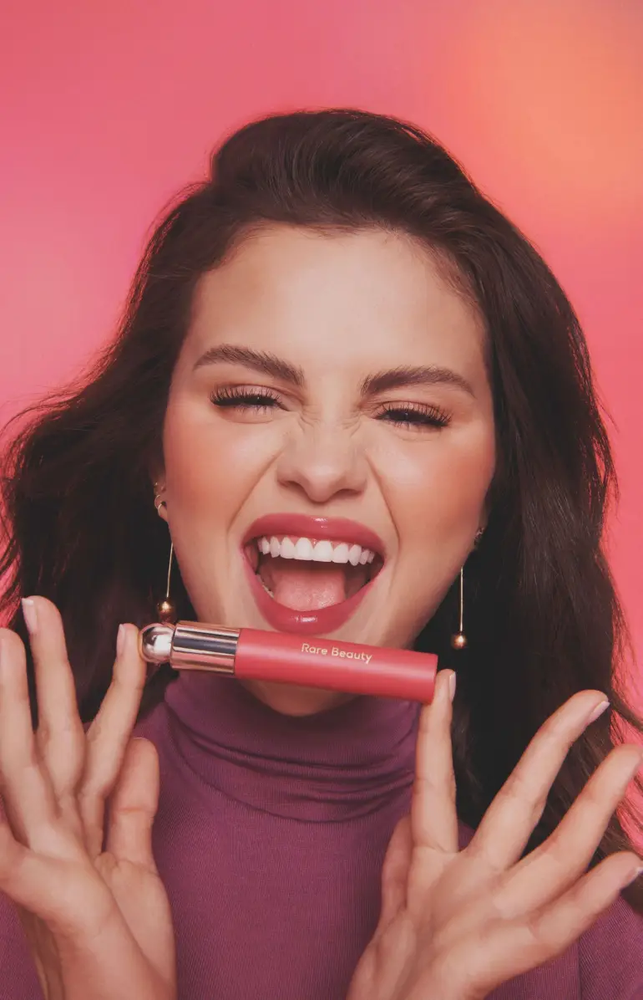

La marca está diseñada para motivar a las personas a celebrar su individualidad y autenticidad. Rare Beauty se presentó como una línea de maquillaje completa que incluye desde sombras hasta labiales. Esta marca de lujo cree que todos somos únicos y que la belleza es más que solo piel profunda Los productos de Rare Beauty no siguen moldes preestablecidos. Desde sus icónicos rubores líquidos hasta sus iluminadores suaves y modulables, la marca ha demostrado que es posible combinar alto rendimiento con ligereza y naturalidad. La textura es una de sus apuestas más fuertes: fórmulas que se funden con la piel, que permiten jugar sin miedo y que acompañan los distintos momentos del día con comodidad Detrás de cada producto hay una intención clara: crear un maquillaje inclusivo que se adapte a todas las habilidades, tonos y edades. No es casual que la línea cuente con una amplia gama de colores, pensada para que cualquier persona encuentre su tono, su luz, su forma. Como lo ha expresado la propia Selena Gomez, Rare Beauty es un recordatorio de que la belleza no necesita aprobación externa width
Uno de los pilares de Rare Beauty es su compromiso con la salud mental. Más allá de las fórmulas, la marca impulsa una conversación abierta sobre el amor propio, el bienestar emocional y la presión que muchas veces sentimos al mirarnos en el espejo. Este enfoque ha sido recibido con entusiasmo por una generación que ya no busca ocultarse, sino mostrarse tal cual es El maquillaje, en este contexto, no es una máscara, sino una herramienta para expresarse y sanar. Desde sus empaques ergonómicos hasta sus campañas con rostros diversos, todo en Rare Beauty maquillaje inclusivo responde a una idea simple pero poderosa: merecemos sentirnos bien con quienes somos, sin filtros ni exigencias externas
La noticia de que Rare Beauty ya está disponible en Colombia ha sido celebrada por quienes esperaban probar sus productos en carne propia. Aunque inicialmente se encuentra en tiendas online como Beauty Face y Beauty House, ya se anticipa la apertura de puntos físicos en ciudades como Bogotá y Medellín. Esto permitirá a más personas experimentar con la línea y recibir asesoría personalizada Más que una marca que llega a nuevos estantes, Rare Beauty trae consigo una conversación que faltaba en la industria local. Su maquillaje inclusivo invita a repensar la forma en que nos acercamos al autocuidado y al consumo. Porque elegir un iluminador o un labial también puede ser un acto de amor propio, y porque verse bien no debería estar reservado para unos pocos, sino al alcance de todos
